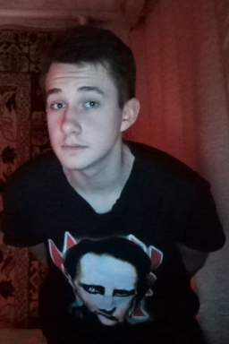

Електронна поштова скринька: jaroshevskiisasha@gmail.com
Мій коледж: ЖКФКБП (Житомирськийкооперативний фаховий коледж бізнесу і права)
Моя група: ІПЗ-9/11-31
Моя майбутня професія: Software Engineer
Мої хобі: Програмування, перегляд фільмів, відеоігри
Мене звуть Ярошевський Олександр. Мені 17 років. Мій будинок знаходиться в західній частні Київської Області, де
досить лісиста місцевість. Я не зустрічаюся. Я навчаюся у ЖКФКБП і приходжу додому не пізніше 8-ї вечора. Я не
курю і не випиваю. Я лягаю спати о 12-й вечора, і переконуюсь, що я отримую рівно вісім годин сну, незважаючи ні
на що. Випивши чашку теплого чаю та потягнувшись хвилин двадцять перед сном, я зазвичай без проблем сплю до
ранку. Немов дитина я прокидаюся вранці без усякої втоми та стресу. На моєму останньому огляді мені сказали, що
у мене немає жодних проблем зі здоров'ям. Я намагаюся донести, що я звичайна людина, яка хоче жити спокійним
життям. Я дбаю про те, щоб не турбувати себе якими-небудь ворогами – перемогами та поразками, які могли б
потривожити мій сон. Ось як я належу до суспільства, і я знаю, що це приносить мені щастя. Хоча, якби мені
довелося битися, я б нікому не програв.